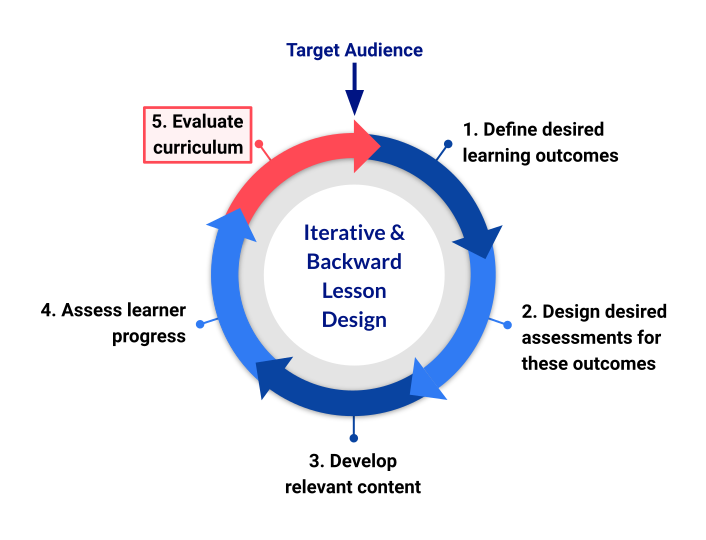

Reflecting on Trial Runs
Last updated on 2024-06-26 | Edit this page
Estimated time: 55 minutes
Overview
Questions
- What did I learn when I taught my lesson?
Objectives
After completing this episode, participants should be able to…
- Reflect on the experience of teaching part of a lesson for the first time.
- Identify changes and improvements that can be made as a result of trialling lesson material.
Welcome back!
This episode picks-up after a long break in training for learners, you may need to remind them of the following expectations as part of training.
- The Carpentries Code of Conduct
- How to get in the queue to participate - hand-raising, typing in chat, etc.
- Microphones muted when you aren’t speaking (if virtual)
- Any other expectations for interaction

In part 2 of the training, we will learn more about the skills and tools you can use to become an effective collaborator on an open source lesson. Before moving on to cover that, we will spend some time reflecting on and discussing the experience of teaching new lesson material for the first time.
Exercise: Check in (10 minutes)
Re-introduce yourself and remind the group about the lesson you have been working on.
In the break since last time, you should have trialled part of the lesson you set out to develop in this training. Congratulations on organising and delivering your first pilot! We will use this session to reflect on that experience, and take some steps to ensure that the feedback and notes you gathered during the trial run are used to improve the quality of your lesson.
For online trainings, Trainers have found it beneficial to give participants the first 5 minutes together in a breakout room, to re-familiarise themselves with the notes from their Trial Runs and discuss what they are going to report out to the rest of the group.
In trainings with a larger cohort of participants, try asking groups to assign a reporter who will be responsible for summarising their experience and answering the discussion questions on behalf of their collaborators.
Discussion: trial runs (35 minutes)
Look back at the notes you took and feedback you received during your trial run (5 mins).
Now report out to the other participants about that trial run. Try to answer some or all of the following questions:
- What worked well both in terms of content and delivery?
- What did not work as well?
- How close were your time estimates to the actual time needed to teach the material and finish exercises?
- How did the audience perceive the difficulty level of the material?
- What will you do differently next time?
- What will you change in the material you taught?
- What will you change in the way you collect feedback in future pilots?
Moving forward from your first pilot, the next steps to consider are:
- Record all the identified changes and improvements that can be made
to the lesson material and assign a person from the team responsible for
each task. The above exercise provided some reflection points after a
trial run; in terms of lesson content, they may translate into the
following considerations:
- is the material too dense, does it need extra explanations?
- would adding a diagram help explain or curate things better?
- is there too much content for one episode, and do you need to split it into smaller teaching units?
- do you need to re-organise and move some content around to improve the flow and narrative?
- are there enough exercises and practical work?
- do you need to realign your lesson objectives and key messages?
- Decide if for some of the feedback you will not take action. Remember, you do not need to respond to every piece of feedback you receive. For example, it is easy to fall down the rabbit hole of adding extra material just because someone suggested it may be a useful thing - sometimes, adding a link or a spoiler pointing to extra reading is sufficient. You need to be able to draw a line under any extra modification suggestions to keep you in scope and on schedule.
- Schedule follow-up co-working sessions with your team to carry on working on fixing issues and adding new content to maintain the momentum.
- Add/Update your lessons’ Instructor Notes based on what you learned and to help other instructors who will teach your lesson in the future.
- Think about the timeline for your next pilot(s), even provisionally, to help you set milestones and targets to work towards.
- Consider writing up your pilot experience in a mini blog post that you can share with the community.
Designing and developing quality lessons is hard - there are many pieces of a puzzle that have to come into place: both pedagogical and organisational. Do not be disheartened with the amount and type of feedback you may have received. Even Carpentries lessons that have been around for 10+ years receive improvement suggestions and fixes almost daily. From our experience, bigger lessons that are delivered over a few days require several full pilots before they can even be considered for a beta release. Planning smaller lesson trials (where you test only a portion of a lesson) and doing them more often with a friendly audience from your local groups and close colleagues is more manageable and will help you make steady progress.
Key Points
- “Perfect is the enemy of good” - your lesson does not need to be perfect before you pilot or release it for community review. Early feedback from the target audience will help you avoid straying off your lesson plan.
- Identify changes and improvements you want to make as a result of trialling your lesson and schedule co-working sessions to work on these tasks.